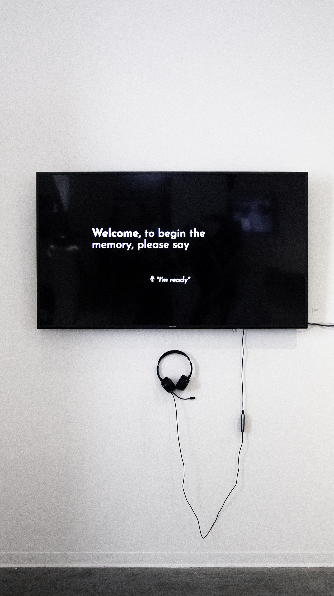

多謝 (
doh-jie) is a voice-recognition based narrative which retells a distinct and difficult memory I had of my dad.
I began this project with a comic I drew in high school—which depicted the moment I told my dad I wanted to study art.
I wanted to ask my dad about his perspective on that conversation and if his stance had changed 4 years later.
I wrote and rewrote how I felt, what I would say to my dad, but I couldn't seem to make the call from LA to SF.
Two weeks before graduation, I called, laughed, and hurriedly translated the conversation from Cantonese to English.

A day before graduation, I got to see the impact of my struggle on my friends and peers.
Nearly all of them had shared the same difficulty of pursuing a creative career with their parent's support.
The conclusion to this project was an uplifting one. Overall, it was an incredibly rewarding experience.